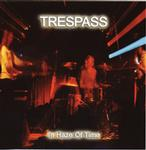

| Artist: | Trespass |
| Title: | In Haze Of Time |
| Label: | Musea FGBG 4387.AR |
| Length(s): | 44 minutes |
| Year(s) of release: | 2002 |
| Month of review: | [09/2002] |
| 1) | Creatures Of The Night | 8.29 |
| 2) | In Haze Of Time | 6.53 |
| 3) | Gate 15 | 7.19 |
| 4) | City Lights | 5.10 |
| 5) | Orpheus Suite | 5.42 |
| 6) | Troya | 5.24 |
| 7) | The Mad House Blues | 5.18 |
On In Haze Of Time, we really go back the beginning of the seventies with somewhat spacey vocal harmonies. In addition to the jazzy influences, there are also some light folky influences, mostly because of the dancing melody of this track and the use of recorders. Notwithstanding, the amateurish and very retro feel of the album, I am really getting to like this. The synths and organ dominate on this waltzy tune. Again, a fine one.
Gate 15 is the first instrumental with a Latin opening: plenty of free form percussion with swirling piano playing. The organ plays its tune, but at times this time the melodies come too easily. Plenty of swing, maybe a bit too much. Yet even here, the big band sound comes in quite well (especially for something I generally do not really like). The musical enthusiasm comes out really well for something consisting of only zeroes and ones. Plenty of organ and synth solo's again on this one, with the bass bobbing along and the drums overly busy, but alwyas light footed. I am thinking more of the jazz/latin side of Keith Jarrett and Chick Corea here than anything else. Except for the organ then.
We move right into the City Lights, which is another one of those catchy vocal tracks with barely variation in the lyrics (and very seventies type trite lyrics at that: I'm In A Mood To Love You Baby etc, but you know what: they get away with it. Amazing). The vocals are higher here at times which makes the accent more or less disappear.
Orpheus Suite is a more classically influenced piece on a rather mellow tune. One might be thinking of Procol Harum here. There are some nice touches, but on the whole the opening is a bit too playful. Later, we get a break into something more active with wildly meandering keyboards. After a folky passage we return to the overly mellow classical part (think harpsichord and baroque here). The instrumental in fact fades into Troya, which has a cosmic opening with some tension building bass playing. Fast rolls of drums make headway for an agile track full of soloing on the keyboards, enough to give all you Hammond freaks a hard-on. Then the bands comes back with a typical Focus turn of phrase.
The Mad House Blues is the final track, opening with piano. We get some ragtime here first with some gurgly keyboards. The vocal part is not the strongest here, a bit too bluesy for me. Other ingredients include a Fender Rhodes solo, a groovy drumsolo and a recorder solo. In my opinion the weakest track, by a long shot.